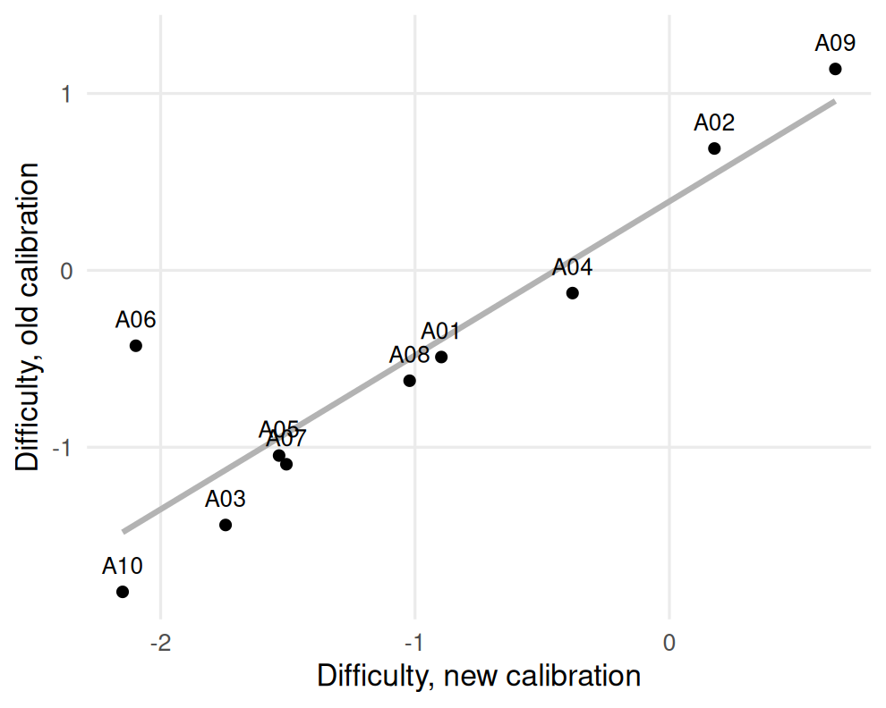
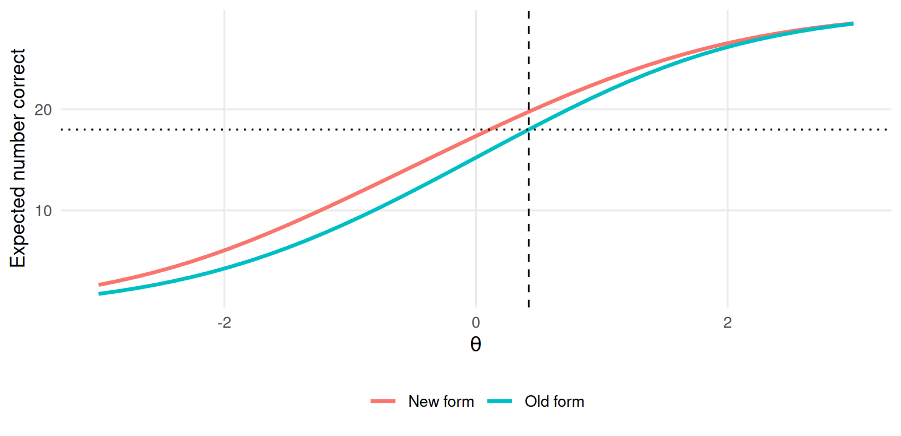

Chapter 10 Linking and equating
Learning goals. After this chapter you can
- explain why two separately calibrated forms are not on the same scale;
- describe common-item (anchor) and common-person designs;
- link two calibrations with the mean-sigma and Stocking-Lord methods;
- check anchor items for parameter drift;
- run a concurrent calibration with a multiple-group model;
- carry a cut score from one form to another with IRT true-score equating.
Key terms: linking, anchor items, moment linking, characteristic curve linking, parameter drift, test characteristic curve.
10.1 The ideas
Every calibration fixes the scale by assuming that the people in it have \(\theta\) with mean 0 and standard deviation 1. If this year’s candidates are stronger than last year’s, a separate calibration of this year’s form will still put them at mean 0, and every item will look harder than it is. To compare forms, or groups, the two calibrations must be put on a common scale. That is linking; when the goal is to make scores on two forms interchangeable, it is called equating (Kolen and Brennan 2014).
Because the IRT scale is only determined up to a linear transformation, linking amounts to finding two constants \(A\) and \(B\) such that, for the new form’s parameters,
\[\theta^* = A\theta + B, \qquad b^* = A b + B, \qquad a^* = a / A.\]
The constants come from information the two calibrations share. In the common design, the non-equivalent groups with anchor test (NEAT) design, the two forms share a set of anchor items. Two families of methods estimate \(A\) and \(B\) from the anchors.
- Moment methods. Mean-sigma matches the mean and standard deviation of the anchor difficulties: \(A = s_{b,\text{old}} / s_{b,\text{new}}\) and \(B = \bar b_\text{old} - A\,\bar b_\text{new}\). They are simple, but sensitive to a single unusual anchor.
- Characteristic curve methods. Stocking-Lord (Stocking and Lord 1983) chooses \(A\) and \(B\) to make the anchors’ test characteristic curve (the expected anchor score as a function of \(\theta\)) as similar as possible on the two scales. They use all the parameters at once and are more robust.
An alternative to linking two separate calibrations is concurrent calibration: Fit one multiple-group model to both forms, constraining the anchor items to be equal across groups and estimating the new group’s mean and standard deviation.
Everything rests on the anchors behaving the same way in both administrations. An anchor whose parameters have changed, because it was exposed, taught to, or its position or wording changed, shows parameter drift, and it must be removed from the anchor set before linking.
10.2 Example 1: Separate calibration and linking
A language school has an old and a new 30-item placement test that share 10 anchor items. We simulate 1,000 students on each. The new cohort is stronger (mean 0.4, standard deviation 1.1), and anchor A06 was leaked and became easier on the new form.
# Simulated NEAT design: old form (O01-O20 + anchors A01-A10) and new form
# (N01-N20 + the same anchors); anchor A06 drifts on the new form.
set.seed(1010)
anchors <- sprintf("A%02d", 1:10)
pars <- data.frame(item = c(sprintf("O%02d", 1:20), sprintf("N%02d", 1:20), anchors),
a = rlnorm(50, 0.15, 0.25), b = rnorm(50, 0, 1))
gen <- function(items, n, mean, sd, shift = NULL) {
p <- pars[match(items, pars$item), ]
if (!is.null(shift)) p$b[p$item %in% names(shift)] <- p$b[p$item %in% names(shift)] + shift
out <- simdata(matrix(p$a), matrix(-p$a * p$b), N = n, itemtype = "2PL",
Theta = matrix(rnorm(n, mean, sd)))
colnames(out) <- items
as.data.frame(out)
}
old <- gen(c(sprintf("O%02d", 1:20), anchors), 1000, 0, 1)
new <- gen(c(sprintf("N%02d", 1:20), anchors), 1000, 0.4, 1.1, shift = c(A06 = -1.2))Calibrate each form on its own:
fit_old <- mirt(old, 1, itemtype = "2PL", verbose = FALSE)
fit_new <- mirt(new, 1, itemtype = "2PL", verbose = FALSE)
p_old <- coef(fit_old, IRTpars = TRUE, simplify = TRUE)$items[anchors, c("a", "b")]
p_new <- coef(fit_new, IRTpars = TRUE, simplify = TRUE)$items[anchors, c("a", "b")]
round(cbind(b_old = p_old[, "b"], b_new = p_new[, "b"]), 2)
#> b_old b_new
#> A01 -0.49 -0.90
#> A02 0.69 0.18
#> A03 -1.44 -1.74
#> A04 -0.13 -0.38
#> A05 -1.05 -1.53
#> A06 -0.43 -2.10
#> A07 -1.10 -1.51
#> A08 -0.62 -1.02
#> A09 1.14 0.65
#> A10 -1.82 -2.15The anchors look easier on the new calibration, because the new students are stronger and their calibration puts them at mean 0. Before linking, check for drift. On a common scale the anchor difficulties should lie on a straight line:
library(ggplot2)
ggplot(data.frame(old = p_old[, "b"], new = p_new[, "b"], item = anchors),
aes(new, old)) +
geom_smooth(method = "lm", se = FALSE, colour = "grey70", formula = y ~ x) +
geom_point() + geom_text(aes(label = item), nudge_y = 0.15, size = 3) +
labs(x = "Difficulty, new calibration", y = "Difficulty, old calibration") +
theme_mirtverse()
Figure 10.1: Anchor difficulties in the old and new calibrations; items off the line may have drifted.
A06 sits well off the line formed by the others. A simple rule is to flag anchors whose difference in difficulty is far from the typical difference:
diff_b <- p_old[, "b"] - p_new[, "b"]
round(sort((diff_b - median(diff_b)) / mad(diff_b)), 1)
#> A04 A03 A10 A08 A01 A07 A09 A05 A02 A06
#> -1.3 -0.9 -0.7 -0.1 0.0 0.0 0.7 0.7 0.9 10.8We drop A06 from the anchor set and compute the mean-sigma constants from the remaining nine:
keep <- setdiff(anchors, "A06")
A <- sd(p_old[keep, "b"]) / sd(p_new[keep, "b"])
B <- mean(p_old[keep, "b"]) - A * mean(p_new[keep, "b"])
c(A = A, B = B)
#> A B
#> 1.04 0.44\(B\) estimates how much stronger the new cohort is on the old scale (we simulated 0.4), and \(A\) how much more spread out (1.1). Stocking-Lord finds the constants that make the two anchor characteristic curves agree:
tcc <- function(a, b, theta) sapply(theta, function(t) sum(plogis(a * (t - b))))
grid <- seq(-3, 3, length.out = 41)
sl_loss <- function(k) {
A <- k[1]; B <- k[2]
sum((tcc(p_old[keep, "a"], p_old[keep, "b"], grid) -
tcc(p_new[keep, "a"] / A, A * p_new[keep, "b"] + B, grid))^2 * dnorm(grid))
}
sl <- optim(c(1, 0), sl_loss)$par
c(A = sl[1], B = sl[2])
#> A B
#> 1.05 0.41Both methods recover the cohort difference well. What would have happened if we had kept the drifted anchor?
A_all <- sd(p_old[, "b"]) / sd(p_new[, "b"])
c(A = A_all, B = mean(p_old[, "b"]) - A_all * mean(p_new[, "b"]))
#> A B
#> 0.963 0.487One leaked item is enough to distort the link, and with it every score on the new form.
10.3 Example 2: Concurrent calibration and equating a pass mark
Concurrent calibration fits both forms at once. We stack the two datasets;
each student has NA for the items they did not take.
# The same NEAT data stacked: NA for items not on a student's form.
# A06 is renamed on the new form, so it is not treated as an anchor.
new_a <- new; names(new_a)[names(new_a) == "A06"] <- "A06_new"
resp <- merge(transform(old, form = "old", id = seq_len(nrow(old))),
transform(new_a, form = "new", id = nrow(old) + seq_len(nrow(new_a))),
all = TRUE)
form <- factor(resp$form, levels = c("old", "new"))
resp <- resp[, setdiff(names(resp), c("form", "id"))]Renaming A06 on the new form turns it into two separate items, one per form,
which is the usual way to drop a drifted anchor from the link without
discarding its responses. multipleGroup() constrains every item to have the
same parameters in both groups (each unique item is only seen by one group
anyway) and frees the new group’s mean and variance:
mg <- suppressWarnings(
multipleGroup(resp, 1, group = form, itemtype = "2PL", verbose = FALSE,
invariance = c(colnames(resp), "free_means", "free_var")))
coef(mg, simplify = TRUE)$new[c("means", "cov")]
#> $means
#> F1
#> 0.411
#>
#> $cov
#> F1
#> F1 1.12The new group’s mean and variance are estimated on the old group’s scale, and are close to the values we simulated (0.4 and \(1.1^2 = 1.21\)).
Now the pass mark. The old form’s pass mark was 18 correct out of 30. What score on the new form corresponds to the same ability? IRT true-score equating finds the \(\theta\) at which the old form’s expected score (its test characteristic curve) equals 18, then reads off the new form’s expected score at that \(\theta\).
items <- coef(mg, IRTpars = TRUE, simplify = TRUE)$old$items
old_items <- c(sprintf("O%02d", 1:20), anchors)
new_items <- c(sprintf("N%02d", 1:20), setdiff(anchors, "A06"), "A06_new")
tcc_form <- function(ids, theta) tcc(items[ids, "a"], items[ids, "b"], theta)
theta_cut <- uniroot(function(t) tcc_form(old_items, t) - 18, c(-4, 4))$root
c(theta_cut = theta_cut, new_form_cut = tcc_form(new_items, theta_cut))
#> theta_cut new_form_cut
#> 0.419 19.763curves <- data.frame(theta = rep(grid, 2),
score = c(tcc_form(old_items, grid), tcc_form(new_items, grid)),
form = rep(c("Old form", "New form"), each = length(grid)))
ggplot(curves, aes(theta, score, colour = form)) +
geom_line(linewidth = 1) +
geom_vline(xintercept = theta_cut, linetype = 2) +
geom_hline(yintercept = 18, linetype = 3) +
labs(x = expression(theta), y = "Expected number correct", colour = NULL) +
theme_mirtverse()
Figure 10.2: Test characteristic curves of the old and new forms on the common scale, with the cut score.
If the new form is easier, its curve lies above the old form’s and the pass mark on the new form is higher; if it is harder, the pass mark is lower. Here the new form is a little easier, so the old pass mark of 18 corresponds to about 19.8 on the new form. Rounding the equated score to a whole number is a policy decision: Rounding down passes slightly more candidates than the old standard, rounding up slightly fewer.
10.4 Your turn
- Repeat the mean-sigma link in Example 1 with the mean-mean method: \(A = \bar a_\text{new} / \bar a_\text{old}\), \(B = \bar b_\text{old} - A\,\bar b_\text{new}\). How close are the constants to the Stocking-Lord ones?
- Rerun the concurrent calibration of Example 2 with A06 as an anchor. How much does the estimated mean of the new group change?
- Compute the pass mark on the new form if the old pass mark were 22.
- A board member asks why the pass mark changed from one year to the next “when the standard was supposed to stay the same”. Answer in two sentences.
Solutions
A_mm <- mean(p_new[keep, "a"]) / mean(p_old[keep, "a"])
c(A = A_mm, B = mean(p_old[keep, "b"]) - A_mm * mean(p_new[keep, "b"]))
#> A B
#> 1.025 0.422
resp_all <- merge(transform(old, form = "old", id = seq_len(nrow(old))),
transform(new, form = "new", id = nrow(old) + seq_len(nrow(new))),
all = TRUE)
form_all <- factor(resp_all$form, levels = c("old", "new"))
resp_all <- resp_all[, setdiff(names(resp_all), c("form", "id"))]
mg_all <- suppressWarnings(
multipleGroup(resp_all, 1, group = form_all, itemtype = "2PL", verbose = FALSE,
invariance = c(colnames(resp_all), "free_means", "free_var")))
coef(mg_all, simplify = TRUE)$new$means
#> F1
#> 0.54
theta22 <- uniroot(function(t) tcc_form(old_items, t) - 22, c(-4, 4))$root
tcc_form(new_items, theta22)
#> [1] 23.1- With A06 treated as an anchor, the new group’s mean rises well above the simulated 0.4. The model has to explain why the new students do so much better on A06; since A06 is constrained to be the same item, part of the leak is credited to the students’ ability. Every new-form score would be too high.
- For example: “The standard is the same level of ability, not the same number of questions. This year’s form was a little easier, so reaching that level of ability takes a slightly higher number of correct answers.”